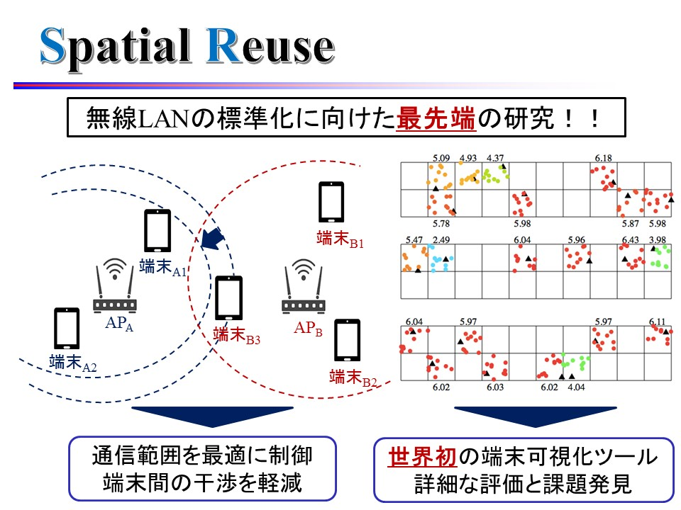

SR班とは？
SR: Spatial Reuse
SR班では，マンションや駅など無線LANが密集した環境で性能を向上させることを目的として研究を行っています．無線LANが密集した環境では，端末間での干渉により性能が低下してしまいます．そこで，周波数資源を効率的に利用する空間再利用(Spatial
Reuse)によって干渉を低減し，性能を向上させる最先端の研究を行っています．
Keyword
Wi-Fi, IoT, IEEE802.11ax, MultiAP
SR班イメージ
研究紹介

SR班メンバー（2022年度版）
修士2年
武松 未来
皆さんがよく使う，携帯電話などの通信端末がどのように効率的に通信するかの研究を行っています．先輩が作ってくださった可視化ツールを使用しているのですが，とてもすごいです！！
学部4年
柳 始鉉
シミュレーションを用いてWi-Fiの研究を行なっています．Wi-Fiは意外と深い内容になっていて面白いです．難しいことがあっても，シミュレーションの公式ドキュメントから理解したり，先輩から教えてもらうことができるので，理解が深まりだんだん面白くなると思います！